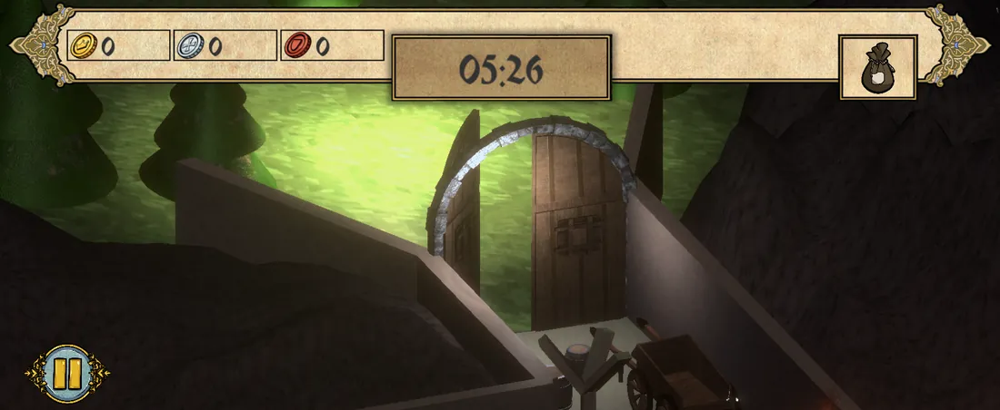
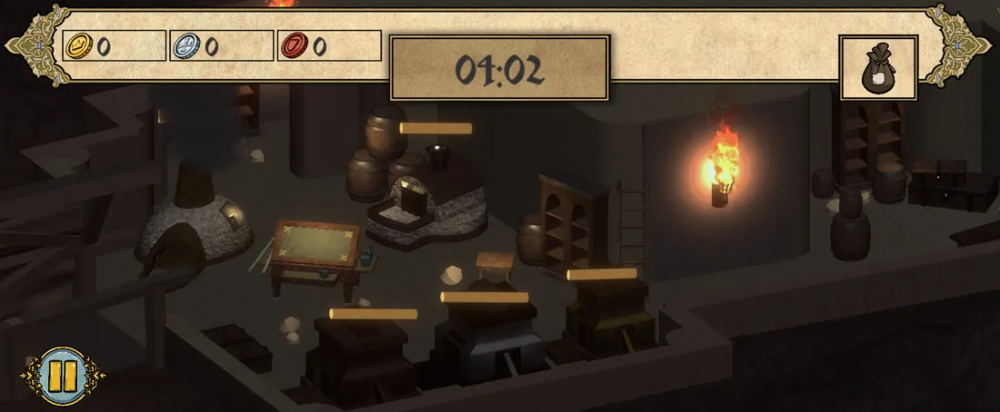
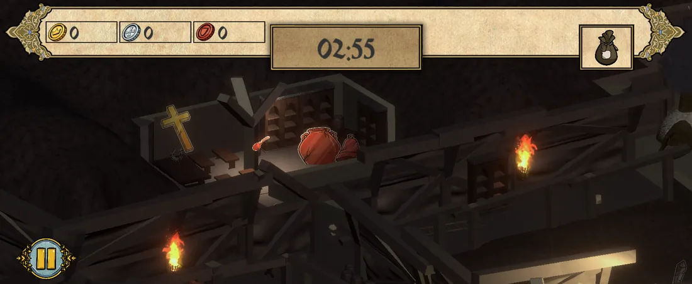
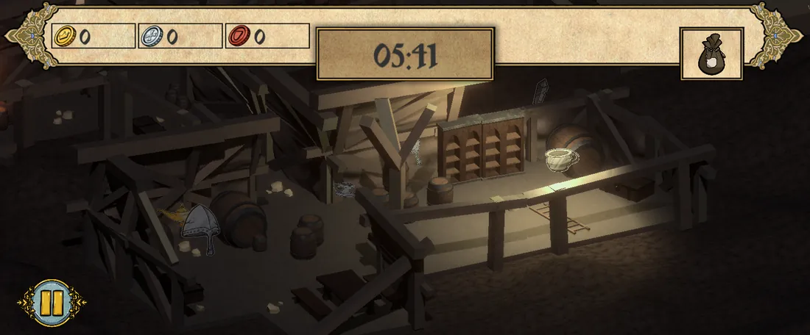
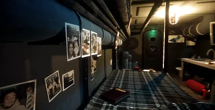
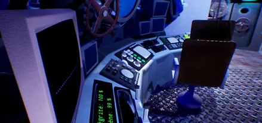
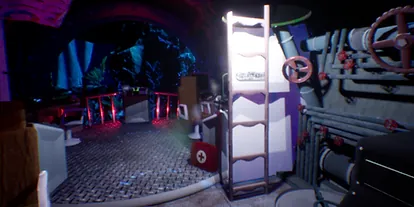

Team project
Dietemna
An immersive horror game set on a submarine expedition gone wrong. Three rooms, three intentions.
Team project2022personalenvironment

Role
Environment Artist
Period
2022
Context
Horror game — claustrophobic, dark, non-euclidean
Scope
Three rooms with three distinct emotional intentions
Three rooms, three intentions
Bedroom — safe, and still wrongThe feeling I was after was closer to the save rooms in The Evil Within: chained and nostalgic with a dark undertone. The safest location in the game, and the player should still feel danger in it.
Main room — heavy and oppressiveThe most visited location, so it needed to be well equipped with props. The intended feeling was constant weight and solitude against the panorama of coral outside.
Body room — direction brokenA small, simple space with control panels, kept consistent with the non-euclidean premise of the room appearing suddenly. The player's sense of direction is disrupted and the anxiety peaks under red emergency light.
Prop discipline in a small space
Creating an environment with a large number of assets is entertaining, but it
leads to overwhelming clutter fast in a confined space. To break the repetition of
the decor I added more props every day of the production — by the end of the game
the submarine felt more chaotic than it did at the start, on purpose.
Gallery
Evidence






